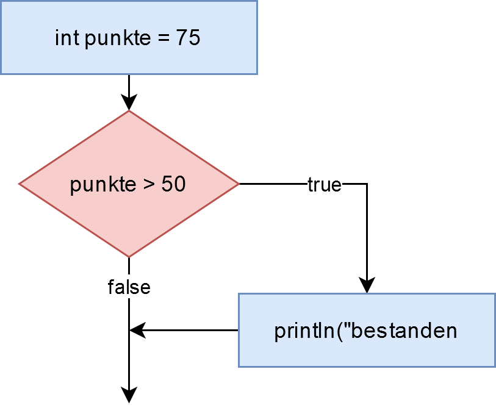
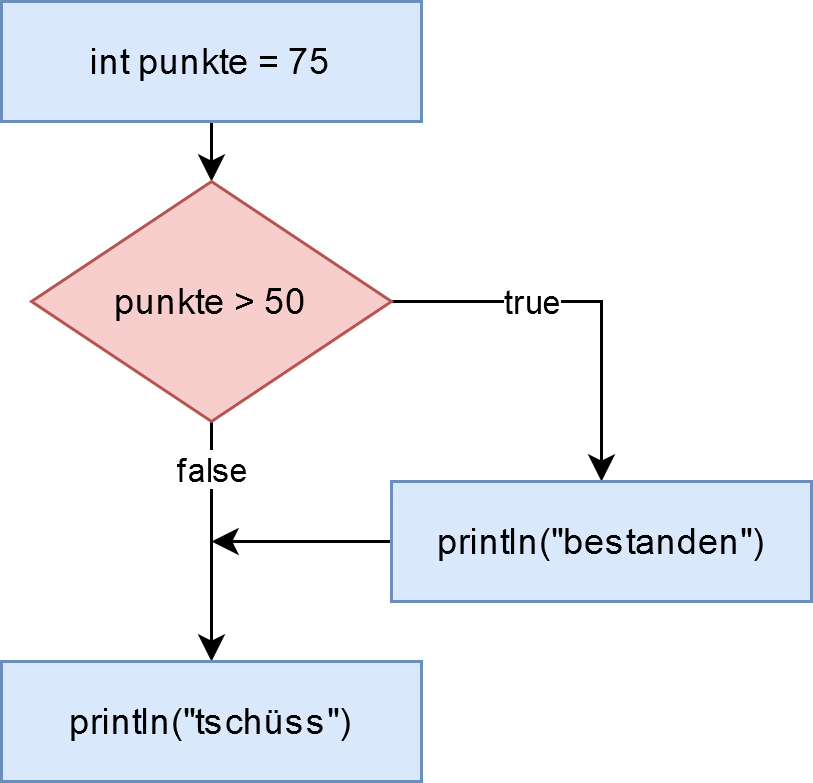
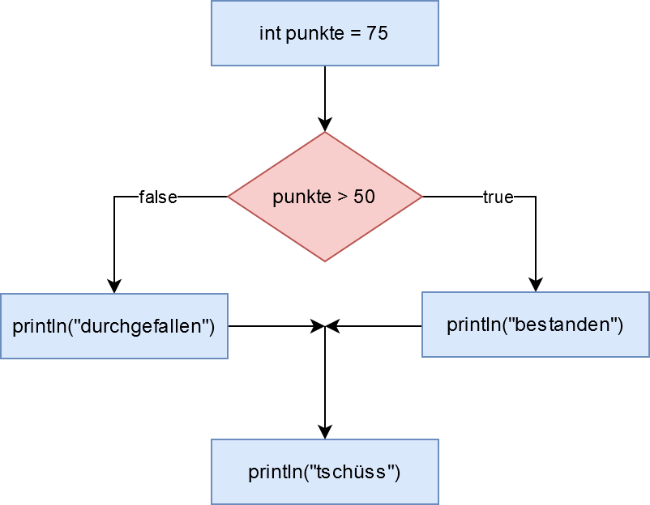
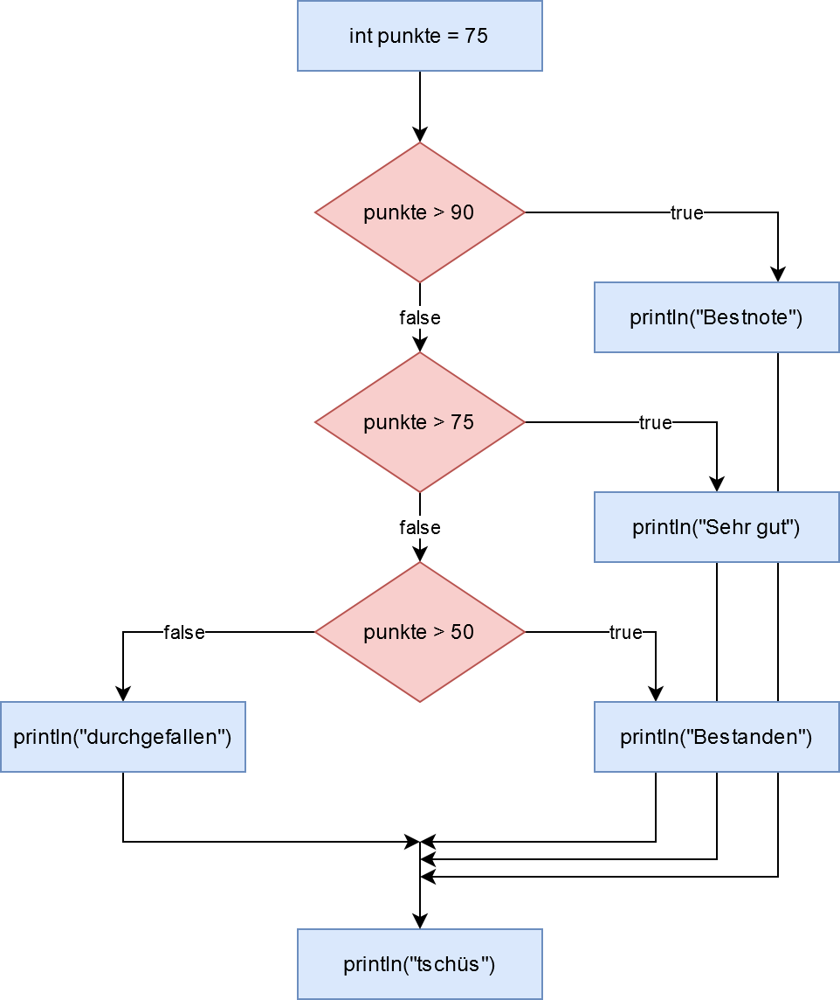

Normalerweise wird Code Zeile für Zeile, von oben nach unten, ausgeführt. Manchmal möchte man aber eine Zeile - oder einen ganzen Block von Zeilen - nur unter einer bestimmten Bedingung durchführen. Du möchtest z.B. den Roboter nur dann nach links bewegen, wenn eine bestimmte Taste gedrückt ist. Dafür gibt es die If-Anweisung. Sie erlaubt es, im Code zu "springen" und somit den sogenannten Kontrollfluss zu verändern. If bedeutet im Englischen wenn oder falls. Auf deutsch könnte man in der Programmierung auch von einer Wenn-Dann-Anweisung reden.
Einfache If-Anweisung
Nehmen wir an, dein Programm soll einem Prüfling sagen, ob er bestanden hat. Das sei dann der Fall, wenn die Punktzahl (Variable punkte) mindestens 50 beträgt. Im Code wird das so gelöst:
int punkte = 75;
if (punkte >= 50) {
println("bestanden");
}Die Zeile mit der Print-Anweisung wird nur unter der Bedingung ausgeführt, dass der Wert von punkte größer oder gleich 50 ist. Ansonsten wird die Zeile übersprungen. Wir ändern also den normalen Kontrollfluss.
Programmablaufplan
Das können wir auch als Programmablaufplan visualisieren:

Im Programmablaufplan stellen Rechtecke normale Befehle/Anweisungen dar, die Pfeile zeigen, welche Anweisung als nächstes ausgeführt wird. Eine Raute symbolisiert eine Entscheidung: Von hier aus gehen zwei Pfeile aus, einer mit true, einer mit false beschriftet. Man wählt den Pfeil, der der Bedingung entspricht (die entweder zu true oder false evaluiert worden sein muss). Man sieht in dem Diagramm sehr schön, dass der Kasten mit "bestanden" nicht immer ausgeführt wird, da sich der Kontrollfluss an der Raute aufteilt.
Wir erweitern unseren Code um eine Zeile hinter der If-Anweisung:
int punkte = 75;
if (punkte >= 50) {
println("bestanden");
}
println("tschüss");Wir erweitern unser Flussdiagramm entsprechend, um zu klären, wann diese neue Codezeile ausgeführt wird.

Wir sehen, dass "tschüs" immer ausgegeben wird, unabhängig davon, ob die Bedingung erfüllt ist oder nicht. Wir sind wieder im "regulären" Kontrollfluss.
Bedingung
Die allgemeine Form der If-Anweisung ist:
if (BEDINGUNG)
ANWEISUNGEine Anweisung ist entweder eine einzelne Code-Zeile (Befehl, Variablenzuweisung ...) oder - wie in unseren Beispielen - ein Code-Block, der mit geschweiften Klammern markiert ist. Auf Code-Blocks gehen wir im nächsten Abschnitt ein.
Eine Bedingung ist ein sogenannter boolescher Ausdruck, benannt nach dem britischen Mathematiker George Boole. Ein boolescher Ausdruck ist ein Ausdruck, der nach Auswertung immer entweder wahr (true) oder falsch (false) ist. Die zwei einfachsten booeschen Ausdrücke sind true und false. Du kannst z.B. schreiben:
if (true) {
println("immer");
}Die obige Anweisung wird immer ausgeführt, was natürlich wenig sinnvoll ist (man kann das if dann auch einfach weglassen), aber es zeigt, dass das Schlüsselwort true (genauso wie false) eine vollwertige Bedigung sein kann.
Numerische Vergleiche
Eine weiterer boolescher Ausdruck ist ein numerischer Vergleich. Beispiele:
10 > 100 // größer
x >= 5 + y // größer gleich
41 == foo // gleich
x != y // nicht gleich
33 < boo // kleinerAuf beiden Seiten des Vergleichs
- können beliebig komplexe arithmetische Ausdrücke stehen.
- können Variablen vorkommen, diese werden bei der Abarbeitung durch ihre aktuellen Werte ersetzt.
Im Vergleich zu den Vergleichsoperatoren, die man aus der Schule kennt, ist zu beachten:
- Für "kleiner gleich" schreibt man <= und zwar in genau dieser Reihenfolge. Ähnlich für "größer gleich".
- Für "gleich" schreibt man ein doppeltes Gleichheitszeichen.
- Für "ungleich" wird != geschrieben. Das Ausrufezeichen ist nämlich für Negation zuständig.
Beachte insbesondere das "gleich". Es muss mit doppeltem Gleichheitszeichen geschrieben werden! Es ist ein häufiger Anfängerfehler hier nur ein einfaches Gleichheitszeichen zu setzen, da in diesem Fall keine Fehlermeldung ausgegeben wird! Es wird dann nämlich eine Zuweisung vorgenommen, d.h. die Variable, die du nur "testen" willst, wird verändert!
x == 5
z == k
42 == fooWICHTIG: Der Test auf Gleichheit in Bedingungen erfordert ein doppeltes Gleichheitszeichen ==.
Code-Block
Die geschweiften Klammern in den obigen Beispielen markieren jeweils einen sogenannten Code-Block. Code-Blocks erlauben uns, viele Zeilen "zusammenzupacken" und bei der If-Anweisung als Aktion zu definieren, die ausgeführt wird, wenn die Bedingung wahr ist.
Code-Blocks werden uns noch in vielen anderen Zusammenhängen begegnen, z.B. bei Funktionen und Schleifen. Beachte, dass die Zeilen innerhalb des Code-Blocks eingerückt sind und zwar alle gleich, so dass man direkt sieht, dass diese Zeilen zusammengehören. In der Processing-Umgebung kannst du das automatisch durchführen lassen im Menupunkt Edit > Auto Format oder mit der Tastenkombination CMD+T (Mac) bzw. STRG+T (Windows).
Die Einrückung ist wichtig, weil ein Code-Block weitere Code-Blöcke enthalten kann. Das heißt die Blöcke können verschachtelt sein. Hier ein Beispiel:
int punkteTest = 75;
int zusatzTest = 85;
if (punkteTest >= 50) {
println("Test ist bestanden!");
if (zusatzTest >= 50) {
println("Zusatztest ist AUCH bestanden!");
}
}Der Else-Teil
Wollen wir auch eine Aktion immer dann ausführen, wenn die Bedingung nicht erfüllt ist, können wir noch einen Else-Teil (else heißt "sonst") anfügen:
int punkte = 75;
if (punkte >= 50) {
println("bestanden");
} else {
println("durchgefallen");
}
println("tschüs");Auch hier können wir den Kontrollfluss mit einem Flussdiagramm verdeutlichen:

Eine wichtige Erkenntnis ist, dass, egal ob die Bedingung true oder false ist, immer Code ausgeführt wird (im Diagramm entweder der rechte Ast oder der linke Ast).
Die If-Else-Anweisung ist als ein einziges, zusammengehöriges Konstrukt zu betrachten, der zwei Code-Blöcke enthält. Nach dem If-Else geht es regulär Zeile für Zeile weiter, hier folgt also auch immer das "tschüs".
Else-If
Wenn du größere Fallunterscheidungen hast, bietet sich das Else-If an. Möchtest du zum zum Beispiel verschiedene Aktionen abfeuern, je nachdem ob ein Prüfling mehr als 75, mehr als 50 oder weniger als 50 hat, müsstest du zwei If-Anweisungen verschachteln:
int punkte = 55;
// äußere If-Anweisung
if (punkte > 50) {
// innere If-Anweisung
if (punkte > 75) {
println("Bestnote!");
} else {
println("Bestanden.");
}
} else {
println("Leider durchgefallen"); // Else-Teil
}Die äußere If-Anweisung unterscheidet zwischen >50 und <=50. Die innere If-Anweisung teilt den Bereich >50 dann nochmal in >75 und <=75.
Auch wenn Verschachtelung erlaubt und in manchen Fällen auch sinnvoll ist, so ist dieser Code doch schwer zu lesen und je mehr Fälle du hast, umso unübersichtlicher wird der Code.
Das Else-If erlaubt dir, eine zweite Bedingung hinzuzufügen. Diese Bedingung wird nur dann geprüft, wenn die erste falsch ist. Das schlussendliche Else greift dann, wenn beide Bedingungen falsch waren.
int punkte = 55;
if (punkte > 75) {
println("Bestnote!");
} else if (punkte > 50) {
println("Bestanden.");
} else {
println("Leider durchgefallen"); // Else-Teil
}Es können beliebig viele Else-If-Teile eingefügt werden:
int punkte = 55;
if (punkte > 90) {
println("Bestnote!");
} else if (punkte > 75) {
println("Sehr gut.");
} else if (punkte > 50) {
println("Bestanden.");
} else {
println("Leider durchgefallen"); // Else-Teil
}
println("tschüs");Processing testet zuerst die erste Bedingung. Falls diese falsch ist, wird das erste Else-If getestet. Falls dies falsch ist, wird das nächste Else-If getestet und so fort. Sind alle diese Bedingungen falsch, so wird der Else-Teil ausgeführt. Danach wird zum normalen Kontrollfluss zurückgekehrt.
Allgemein kann man das so schreiben:
if (BEDINGUNG-1)
ANWEISUNG-1
else if (BEDINGUNG-2)
ANWEISUNG-2
else if (BEDINGUNG-3)
ANWEISUNG-3
...
else
ANWEISUNG-NFlussdiagramm
Als Flussdiagramm sieht das so aus:

Man sieht hier deutlich, dass nur genau eine Option (d.h. ein Code-Block) ausgeführt wird. Danach wird zum normalen Kontrollfluss zurückgekehrt.
Coding Style
Bitte achte darauf, wo Leerzeichen und Zeilenumbrüche gemacht werden, und wo nicht.
if (foo > 200) {
println("foo");
} else if (foo > 100) {
println("bar");
} else {
println("sonst");
}Alternativ:
if (foo > 200)
{
println("foo");
} else if (foo > 100)
{
println("bar");
} else
{
println("sonst");
}
Denke auch daran, deinen Code mit Bearbeiten > Autoformatierung von Processing korrekt einrücken zu lassen (Tastenkürzel STRG+T bzw. CMD+T).
Zusammenfassung
Eine If-Anweisung erlaubt es, eine oder mehrere Code-Zeilen (einen Code-Block) nur unter einer ganz bestimmten Bedingung auszuführen.
- Eine Bedingung wird durch einen booleschen Ausdruck definiert. Dies ist ein Ausdruck, der zu true oder false ausgewertet werden kann. Die Schlüsselworte true und false sind jeweils (triviale) boolesche Ausdrücke. Wichtiger sind arithmetische Vergleiche wie x > 5 oder 10 == y. WICHTIG: Immer doppeltes Gleichheitszeichen beim Vergleich nehmen!
- Ein Code-Block ist eine Anzahl von Anweisungen (können also mehrere Zeilen sein), von von geschweiften Klammern umgrenzt sind. Die Code-Zeilen innerhalb der Klammern sind in Processing alle gleich weit eingerückt, so dass man leicht erkennt, in welchem Block sich eine Zeile befindet.
- Möchte man Code-Zeilen genau dann ausführen, wenn die Bedingung nicht erfüllt ist, so hängt man mit Hilfe von else einen zweiten Code-Block an, der genau dann ausgeführt wird.
- Bei komplexerem Fallunterscheidungen kann an das else ein weiteres if gekoppelt werden.
Aufbau
| Einfaches If | If-Else | Else-If |
if (BEDINGUNG) |
if (BEDINGUNG) |
if (BEDINGUNG) |